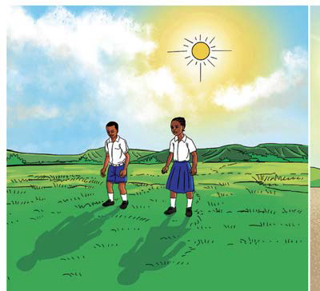
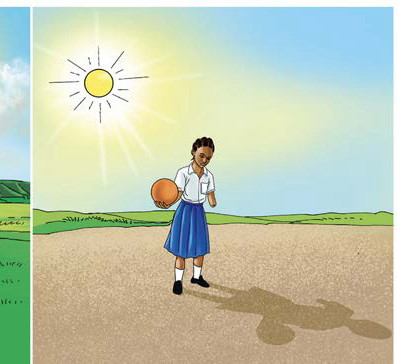

6.Nini kingetokea kama kusingekuwa na nishati ya mwanga?
Matokeo
Kivuli ambacho ni sehemu yenye giza kinaonekana upande wa pili wa mpira ukutani.
Hitimisho
Umbo la kivuli kushabihiana na kitu kilichozuia mwanga kupenya. Hii inaonesha kuwa, mwanga husafiri katika mstari mnyoofu.
Chunguza Kielelezo namba 10, kisha jibu maswali yanayofuata.


Kielelezo namba 10 kinaonesha kutokea kwa vivuli.
Maswali
1.Je, unatambua nini kuhusu umbo la kivuli kutokana na Kielelezo namba 10?
2.Je, kivuli kinaweza kuwa na rangi? Toa sababu kwa jibu lako.